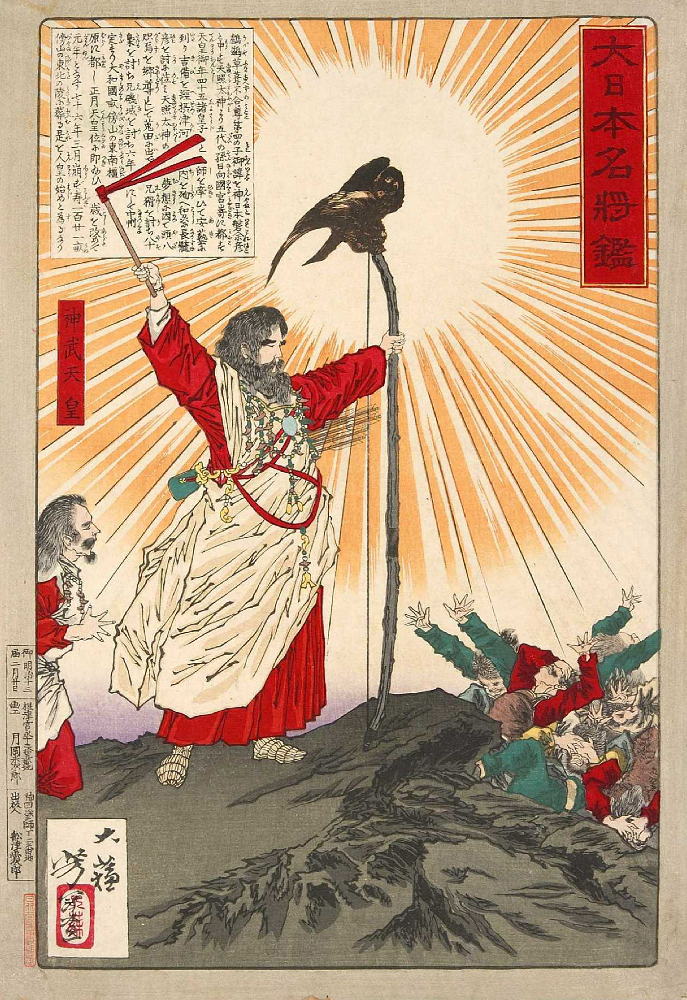
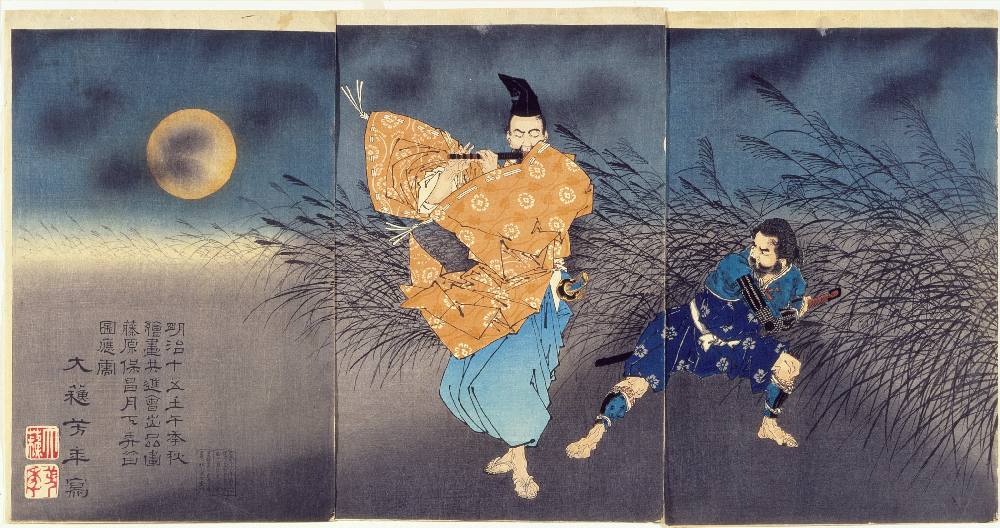
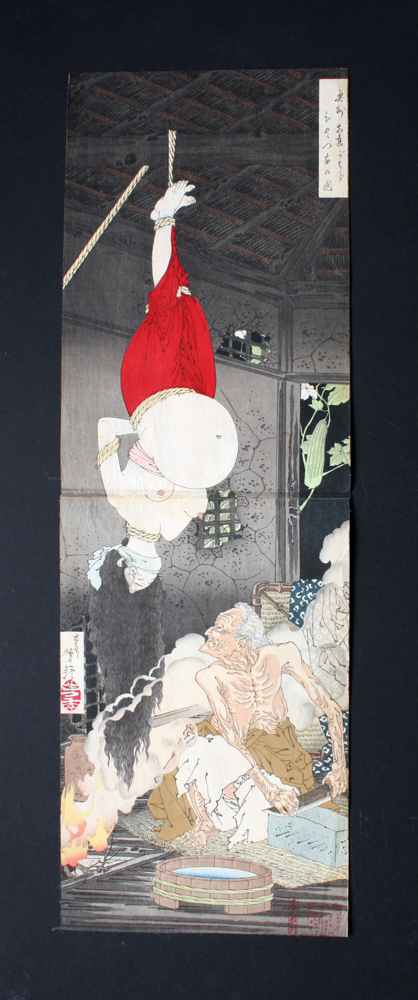
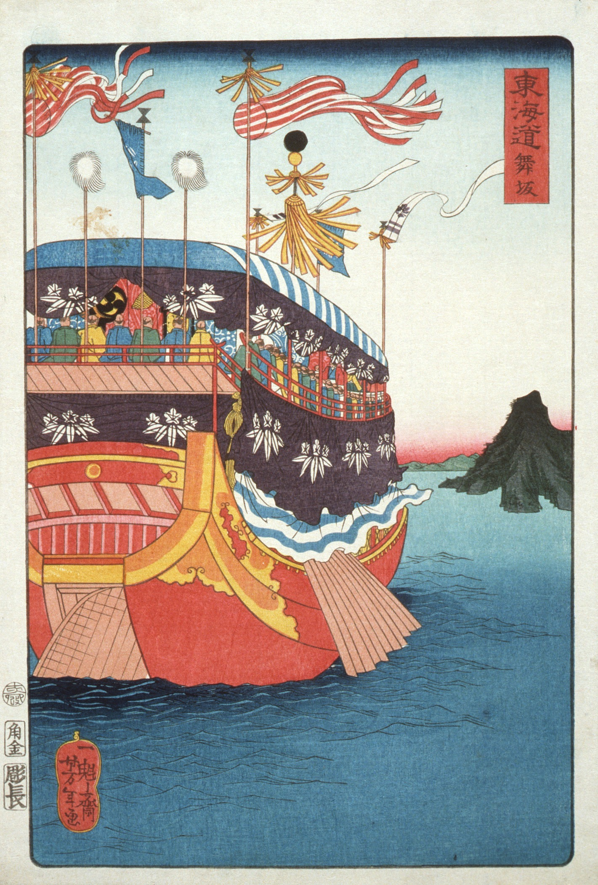
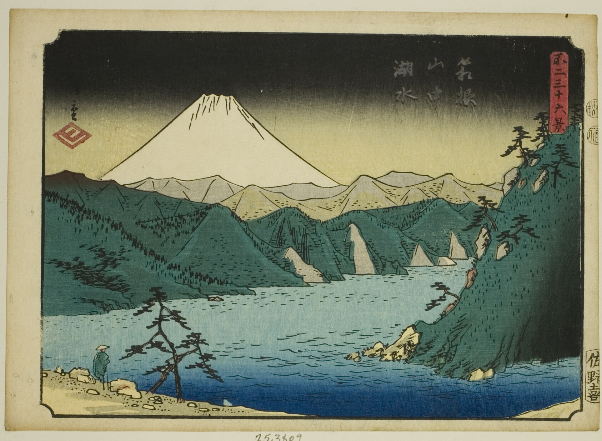

~ tsukioka yoshitoshi ~
Yaoya Oshichi, 1880s

Emperor Jimmu, 1870s

Fujiwara no Yasumasa Playing the Flute by Moonlight, 1880s

Adachi Moor, 1880s

Maisaka, 1880s

Lake in the Hakone Mountains, 1852
back